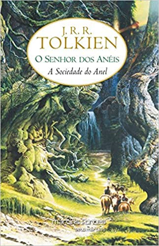
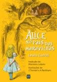

Estante de Livros
Sua biblioteca á um clique de distancia
Harry Potter e a Pedra Filosofal

Sinopse
Harry Potter nunca tinha ouvido falar em Hogwarts até o momento em que as CARTAS começam a aparecer no capacho do número 4 da rua dos Alfeneiros.
Endereçadas com um LACRE PÚRPURA, elas são repidamente confiscadas por seus tios TERRÍVEIS.
E então, no décimo primeiro aniversário de Harry, um homem GIGANTESCO com olhos luzindo como besouros negros chamado RÚBEO HAGRID entra intempestivamente com uma notícia ASSOMBROSA:
Harry Potter é um bruxo e tem uma vaga na ESCOLA DE MAGIA E BRUXARIA DE HOGWARTS
.
Uma aventura inacreditável está para começar!
Fonte: Google Books
| Data da primeira publicação |
Autor |
Idioma Original |
Gêneros |
| 26 de Junho de 1997 |
J.K.Rowling |
Inglês |
Literatura Fantástica, Alta fantasia,Romance,Literatura infantil |
O Senhor dos Anéis: A Sociedade do anel

Sinopse
"O volume inicial de O Senhor dos Anéis, lançado originalmente em julho de 1954
, foi o primeiro grande épico de fantasia moderno, conquistando milhões de leitores e se tornando o padrão de referência para todas as outras obras do gênero até hoje. A imaginação prodigiosa de J.R.R. Tolkien e seu conhecimento profundo das antigas mitologias da Europa permitiram que ele criasse um universo tão complexo e convincente quanto o mundo real.
A Sociedade do Anel começa no Condado, a região rural do oeste da Terra-média onde vivem os diminutos e pacatos hobbits.
Bilbo Bolseiro, um dos raros aventureiros desse povo, cujas peripécias foram contadas em O Hobbit, resolve ir embora do Condado e deixa sua considerável herança nas mãos de seu jovem parente Frodo.
O mais importante legado de Bilbo é o anel mágico que costumava usar para se tornar invisível.
No entanto, o mago Gandalf, companheiro de aventuras do velho hobbit, revela a Frodo que o objeto é o Um Anel, a raiz do poder demoníaco de Sauron, o Senhor Sombrio, que deseja escravizar todos os povos da Terra-média.
A única maneira de eliminar a ameaça de Sauron é destruir o Um Anel nas entranhas da própria montanha de fogo onde foi forjado.
A revelação faz com que Frodo e seus companheiros hobbits Sam, Merry e Pippin deixem a segurança do Condado e iniciem uma perigosa jornada rumo ao leste.
Ao lado de representantes dos outros Povos Livres que resistem ao Senhor Sombrio, eles formam a Sociedade do Anel."--
Fonte: Google Books
| Data da primeira publicação |
Autor |
Idioma Original |
Gêneros |
| 28 de Julho de 1594 |
J.R.R. Tolkien |
Inglês |
Aventura, Drama, Fantasia |
Percy Jackson e o Ladrão de Raios

Sinopse
Primeiro volume da saga Percy Jackson e os olimpianos, O ladrão de raios esteve entre os primeiros lugares na lista das séries mais vendidas do The New York Times
. O autor conjuga lendas da mitologia grega com aventuras no século XXI.
Nelas, os deuses do Olimpo continuam vivos e ainda se apaixonam por mortais, e dessa união nascem filhos metade deuses, metade humanos, como os heróis da Grécia antiga. Marcados pelo destino, eles dificilmente passam da adolescência. Poucos conseguem descobrir sua identidade.
Percy Jackson é um desses semideuses. Ele tem experiências estranhas em que deuses e monstros mitológicos parecem saltar das páginas dos livros de História direto para a sua vida. Pior que isso: algumas dessas criaturas estão bastante irritadas. Um artefato precioso foi roubado do Monte Olimpo e Percy é o principal suspeito. Para restaurar a paz, ele e seus amigos – jovens heróis modernos - terão de fazer mais do que capturar o verdadeiro ladrão: precisam elucidar uma traição mais ameaçadora que fúria dos deuses.
Fonte: Google Books
| Data da primeira publicação |
Autor |
Idioma Original |
Gêneros |
| 28 de Junho de 2005 |
Rick Riordan |
Inglês |
Romance, Ficcão Juvenil |
Alice no pais das Maravilhas

Sinopse
Você poderia me dizer, por favor, qual caminho eu devo seguir a partir daqui?'
Que esta pergunta seja feita por uma garotinha perdida de casa (após ter seguido um coelho falante até sua toca) a uma espécie de gato fantasmagórico flutuante já não causa nenhuma estranheza quando chegamos na tal parte da história, pois como nos alertou a própria menina: 'há tanta coisa estranha acontecendo aqui que eu já não me surpreendo com mais nada'.
Com este conto surreal e fantástico
, muitas vezes sem sentido algum, noutras vezes carregado de sentido oculto e profundo, Lewis Carroll revolucionou para sempre a literatura infantil, praticamente a refundando (não surpreende que encontremos algo do seu estilo em Antoine de Saint-Exupéry e Monteiro Lobato). É aqui que conheceremos céle...
Fonte: Google Books
| Data da primeira publicação |
Autor |
Idioma Original |
Gêneros |
| Novembro de 1865 |
Lewis Carroll |
Inglês |
Literatura infantil,Literatura fantástica |
O Guia do Mochileiro das Galáxias

Sinopse
O livro conta a história de Arthur Dent
, um típico inglês que, num dia que pode ser considerado tudo menos típico, descobre não só que Ford Prefect, um de seus melhores e únicos amigos, é um extra-terrestre, mas também que a Terra está prestes a ser destruída pelos Vogons (uma raça alienígena extremamente burocrática e malquista em toda a Galáxia) para dar espaço a uma nova via intergaláctica.Com a ajuda de Ford, Arthur foge momentos antes da demolição do planeta, pegando carona clandestinamente em uma das espaçonaves Vogons. Quando a presença indesejável dos dois é detectada, o comandante da Frota de Demolição Vogon, Prostetnic Vogon Jeltz, não hesita em expulsar e abandona-los à deriva no espaço.
Mas, em um incrível golpe de sorte, a dupla é resgatada pela nave Coração de Ouro, comandada por Zaphod Beeblebrox, presidente da Galáxia e Trillian, a terráquea que fugiu com Zaphod, logo depois de tê-lo conhecido em uma festa, seis meses antes da demolição da Terra.
Outro personagem de destaque na trama é o robô Marvin
, cujo desprezo pela vida só não se compara à sua depressão crônica e ao tamanho de sua inteligência.Assim começa a jornada de Arthur Dent e Ford Prefect pelo Universo em busca da Pergunta Fundamental da Vida, do Universo e Tudo Mais, sempre guiados por um fantástico livro de viagens: O Guia do Mochileiro das Galáxias.
Fonte: Google Books
| Data da primeira publicação |
Autor |
Idioma Original |
Gêneros |
| 12 de Outubro 1979 |
Douglas Adams |
Inglês |
Romance, Humor,Ficcão humorística |